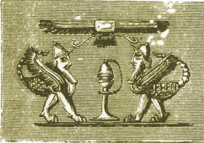

|  | The Chaldean Account of Genesisby George Smith[1876] |
George Smith (1840-1876) was an English Assyrologist, apprentice engraver, but self-taught in cuneiform in the corridors of the British Museum. Eventually he was hired by Sir Henry Rawlinson, prominent archaeologist. Smith achieved world-wide attention when he discovered an account of the flood with obvious Biblical parallels in 1872, related in The Chaldean Account of the Deluge. This book expands on the previous work, and presents numerous translations of tablets, including the first print appearance of the Gilgamesh (Idzubar) cycle. Some of the most important texts, such as the Descent of Ishtar and the account of the Flood are fairly intact, while others are in pieces.--J.B. Hare, Dec. 15th, 2009.
Title Page
Introduction
Contents
List of Illustrations
Chapter I. The Discovery of the Genesis Legends
Chapter II. Babylonian and Assyrian Literature
Chapter III. Chaldean Legends Transmitted Through Berosus and Other Ancient Authors
Chapter IV. Babylonian Mythology
Chapter V. Babylonian Legend of the Creation
Chapter IV. Other Babylonian Accounts of the Creation
Chapter VII. The Sin of the God Zu
Chapter VIII. The Exploits of Lubara
Chapter IX. Babylonian Fables
Chapter X. Fragments of Miscellaneous Texts
Chapter XI. The Izdubar Legends
Chapter XII. Meeting of Heabani and Izdubar
Chapter XIII. Destruction of the Tyrant Humbaba
Chapter XIV. The Adventures of Ishtar
Chapter XV. Illness and Wanderings of Izdubar
Chapter XVI. The Story of the Flood and Conclusion
Chapter XVII. Conclusion
Index